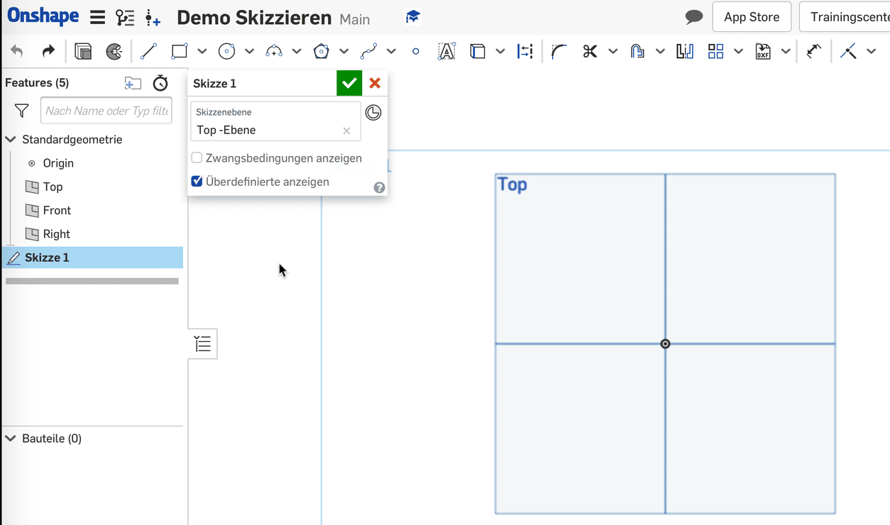
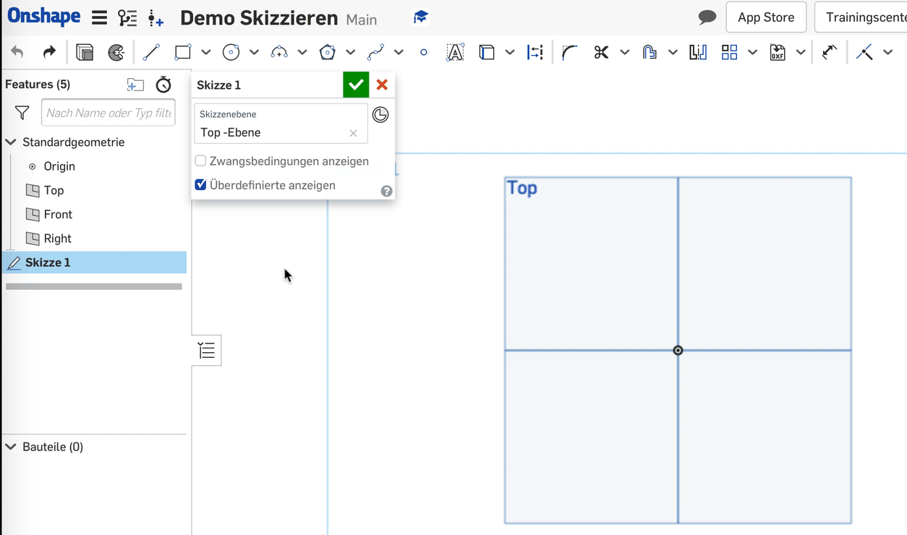
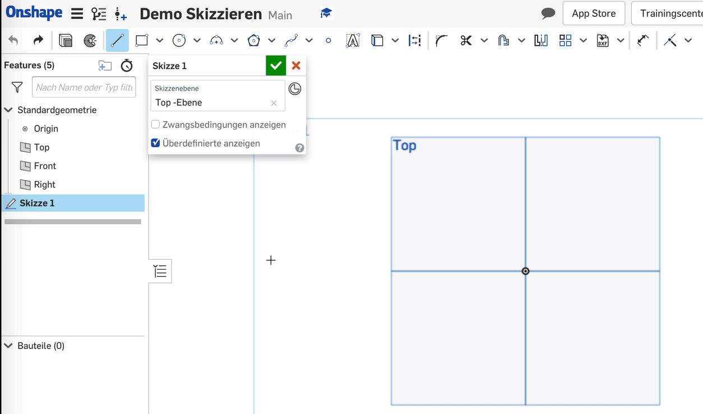
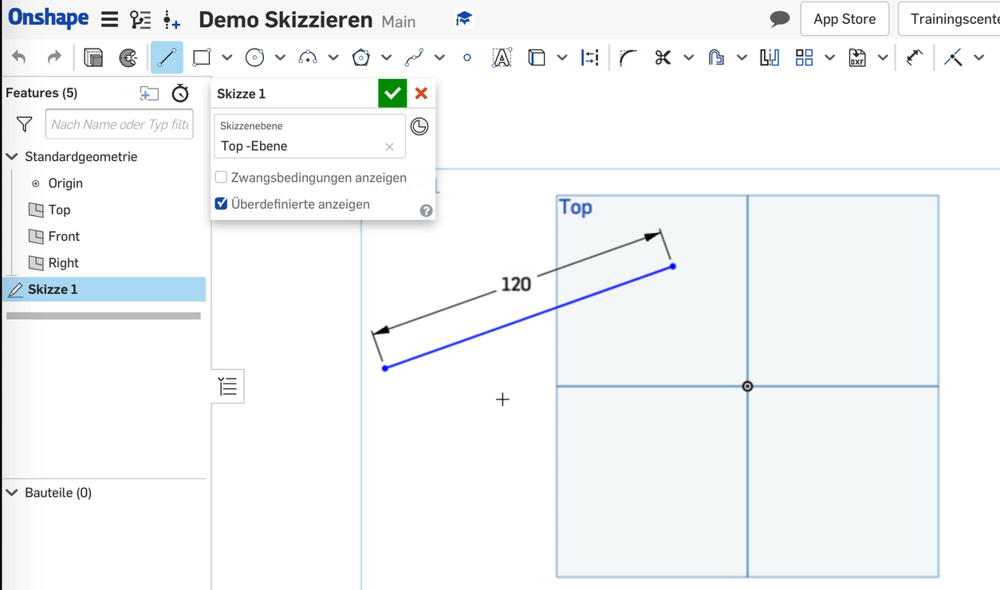

1. Schritt
Klicke in der Werkzeugleiste auf das Werkzeug "Linie". Das Werkzeug wird dadurch aktiviert.
 

2. Schritt
Bewege den Mauszeiger an den Punkt der Skizze wo deine Linie beginnen soll. Fixiere den Startpunkt mit einem Klick.

3. Schritt
Bewege den Mauszeiger nun an den Punkt, wo die Linie aufhören soll. Fixiere diesen Punkt, indem du 2-mal auf den gleichen Punkt klickst (kein Doppelklick nötig).

4. Schritt, optional
Nachdem du den Endpunkt gesetzt hast, erscheint neben der Linie eine graue Box mit einer Zahl. Die Zahl gibt an, wie lang die von dir gezeichnete Linie aktuell ist.
Wenn du auf der Tastatur eine Zahl eintippst und mit der "Enter"-Taste bestätigst, wird dieser Wert übernommen: Onshape beamasst die Linie automatisch nach deinem Wunsch.
weitere Schritte
Wenn du weitere Linien zeichnen möchtest, wiederholst du die Schritte 2,3 und 4.

Wichtig
Wenn du fertig bist, solltest du das Werkzeug deaktivieren. Am einfachsten geht das mit der Escape-Taste (esc) oder indem du in der Werkzeugleiste nochmals auf das Werkzeug klickst.